Sam’s Blog
Sam’s Blog
Categories
All
(25)
algorithms
(1)
machine_learning
(9)
math
(2)
SLAM
(2)
statistics
(9)
tools
(3)
Fitting Gaussians with Missing Observations
statistics
Say you want to fit a multivariate Normal distribution to some data.
Feb 5, 2026
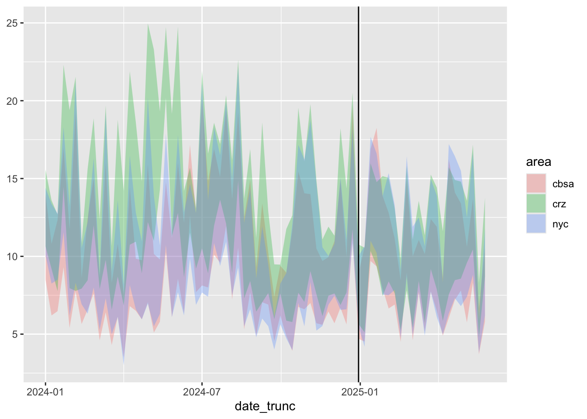
Air Quality and Congestion Pricing
statistics
This post dives into the data of a recent paper quantifying the effects of Manhattan’s recent congestion pricing scheme (
Fraser et al. (2025)
). The authors argue that…
Dec 19, 2025
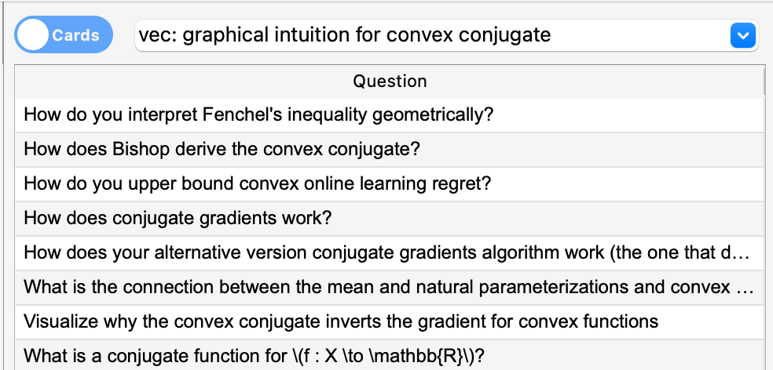
AnkiVec: Vector Search for Anki
tools
I just released AnkiVec, an Anki addon that creates vector embeddings for cards using Ollama and enables hybrid semantic search with ChromaDB.
Nov 20, 2025
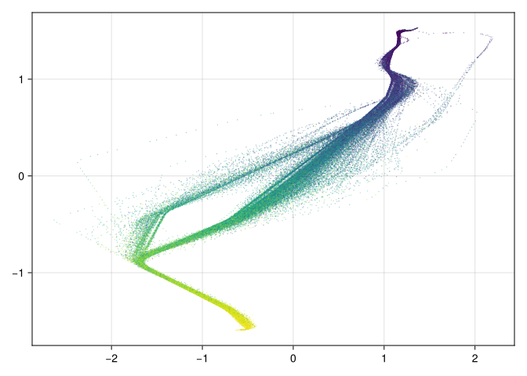
Classifying Ships with Gaussian Process Mixtures
machine_learning
I recently came across a dataset of container ship movement between Tallinn and Helsinki on Kaggle. In this notebook, we’ll try to classify whether a given ship’s trajectory…
Nov 19, 2025
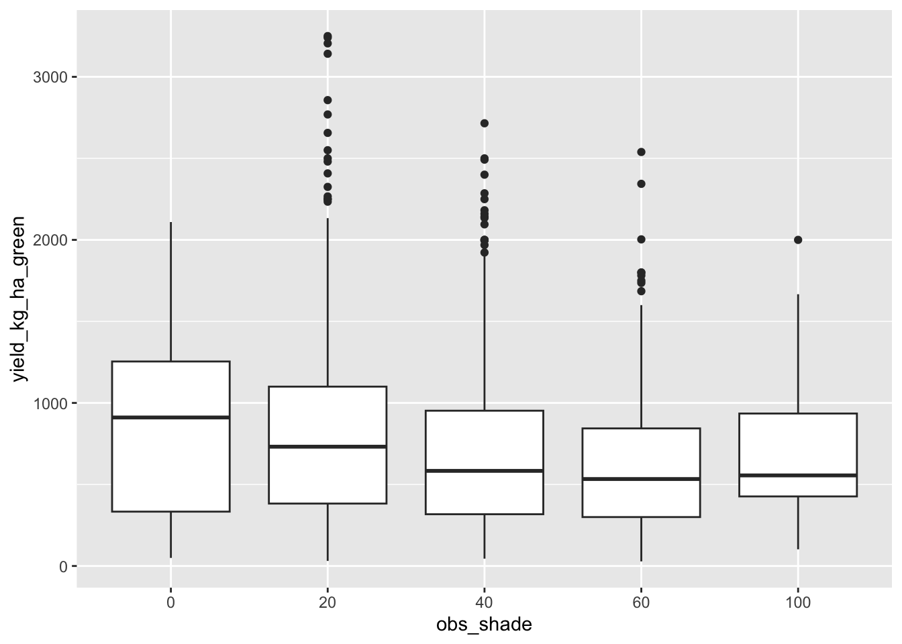
Analyzing Coffee Yields
statistics
This post demonstrates working with generalized linear mixed models in the context of coffee bean yield data. Each row in the following dataset is an observation of coffee…
Oct 19, 2025
Sizecheck: Making Tensor Code Self-Documenting with Runtime Shape Validation
tools
Writing neural networks often feels like juggling tensors in the dark. You know that
attention_weights
should be 4-dimensional, but PyTorch won’t tell you until your matrix…
Aug 30, 2025
Books and Guides
statistics
machine_learning
In the style of Susan Rigetti’s classic “So You Want to Learn Physics”, this post lists some of my favorite resources for learning stuff.
Aug 21, 2025
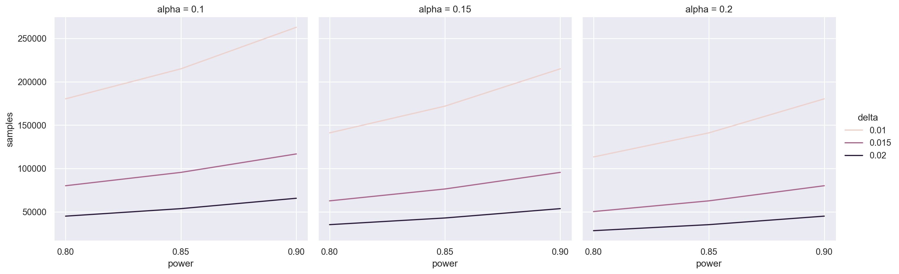
Frequentist Sample Size Estimation
statistics
In the previous post, I showed a Bayesian method of sample size estimation for A/B/n testing. This post goes over the more conventional frequentist method.
Aug 15, 2025
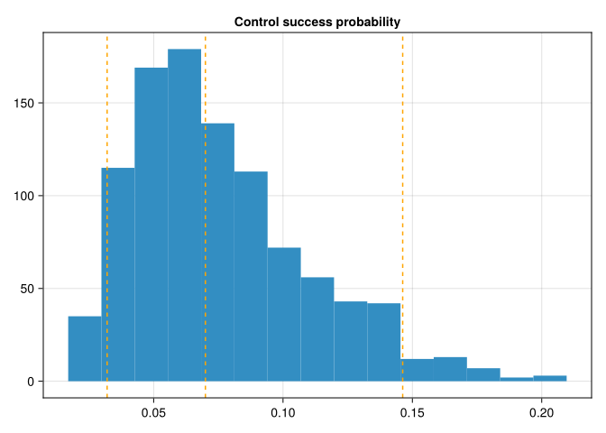
Bayesian Power Analysis for A/B/n Tests
statistics
This post highlights a Bayesian approach to sample size estimation in A/B/n testing. Say we’re trying to test which variant of an email message generates the highest…
Jul 31, 2025
An Opinionated Tooling Guide
tools
Statistics and Data Analysis:
Overall: use R. Its has the largest ecosystem of statistical packages.
Jun 1, 2025
Finding Common Topics
machine_learning
How do you find thematic clusters in a large corpus of text documents? The techniques baked into
sklearn
(e.g. nonnegative matrix factorization, LDA) give you some intuition…
Feb 10, 2025
Synthetic Controls for Texas Prison Data
statistics
This post uses a synthetic control design to study whether Texas’s prison building boom in 1993 resulted in them incarcerating more prisoners than they would have if their…
Jan 25, 2025
Hop Lists
algorithms
Hop Lists
are a novel retroactive set data-structure that allow for a branching timeline. Each hop list node
\(h_t\)
is associated with a specific time
\(t\)
and a randomly…
Oct 5, 2024
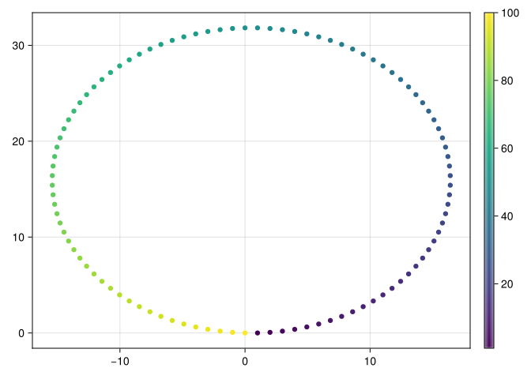
Graph SLAM
SLAM
For a robot to navigate autonomously, it needs to learn both its own location, as well as the locations of any potential obsticles around it, given its sensors’ observations…
Jul 22, 2024
Diagnosing Lack of Independence in Exogenous Variables
statistics
While performing linear regression with
statsmodels
, you might occasionally find that your exogenous variables aren’t independent, giving you a error about a singular matrix.
May 6, 2024
Finite Basis Gaussian Processes
machine_learning
By Mercer’s theorem, every positive definite kernel
\(k(x, y) : \mathcal{X} \to \mathcal{X} \to \mathbb{R}\)
that we might want to use in a Gaussian Process corresponds to…
Apr 2, 2024
Finite Particle Approximations
machine_learning
Say you have a discrete distribution
\(\pi\)
that you want to approximate with a small number of weighted particles. Intuitively, it seems like the the best choice of…
Apr 2, 2024
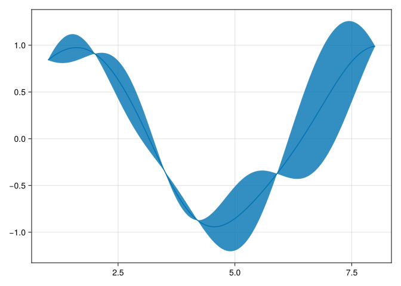
Nearest Neighbor Gaussian Processes
machine_learning
In a
\(k\)
-Nearest Neighbor Gaussian Process
, we assume that the input points
\(x\)
are ordered in such a way that
\(f(x_i)\)
is independent of
\(f(x_j)\)
whenever
\(i > j +…
Feb 16, 2024
Krylov Methods
math
The
\(i\)
th
Krylov subspace
\(\mathcal{K}_i\)
for a symmetric matrix
\(A\)
starting from vector
\(b\)
is the subspace spanned by the vectors
\(b, Ab, A^2b, \dotsc A^{i-1}b\)
.…
Feb 13, 2024
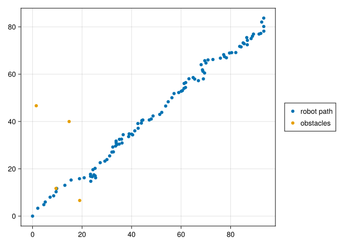
Mapping with Gaussian Conditioning
SLAM
For a robot to navigate autonomously, it needs to learn the locations of any potential obsticles around it. One of the standard ways to do this is with an algorithm known as…
Oct 2, 2023
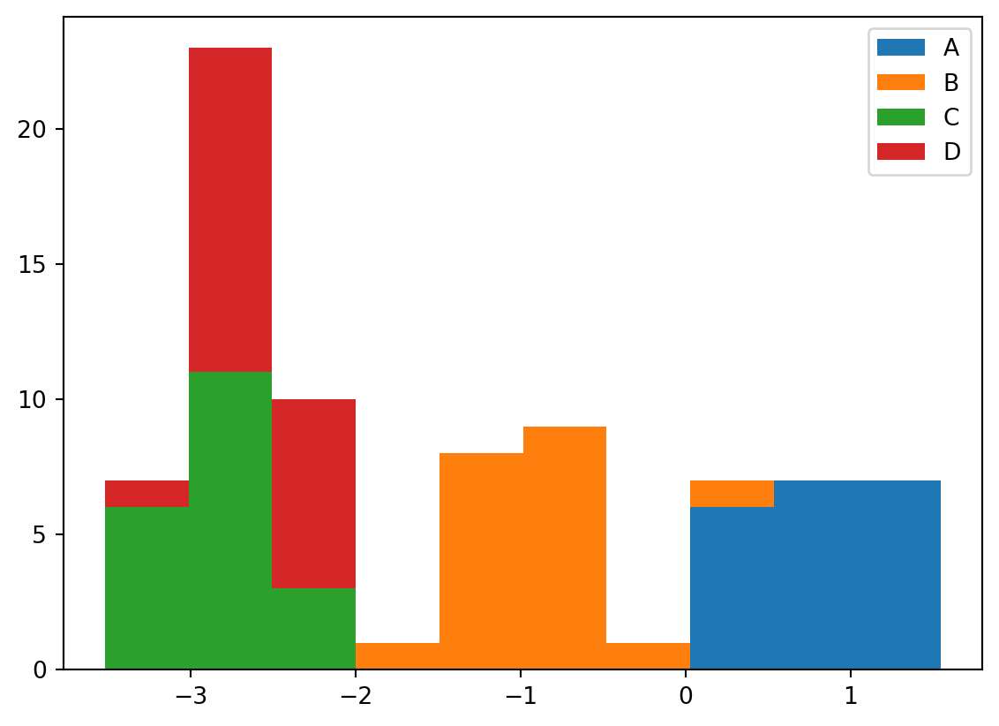
Conjugate Computation
machine_learning
This post is about a technique that allows us to use variational message passing on models where the likelihood doesn’t have a conjugate prior. There will be a lot of Jax…
Aug 16, 2023
Generative ODE Models are VAEs
machine_learning
Generative image models based on ordinary differential equations can be seen as forms of variational auto-encoders with a partially deterministic inference network.
\(\newcom…
Aug 15, 2023
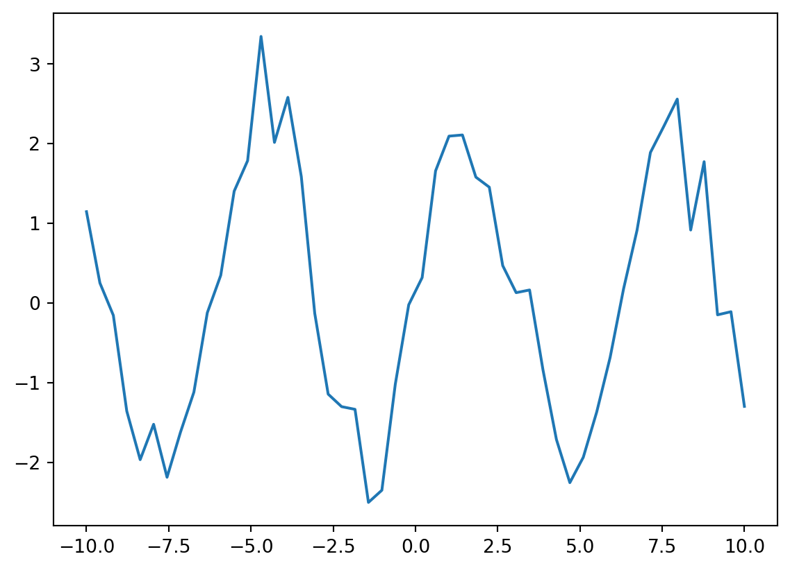
Sparse Variational Gaussian Processes
statistics
This notebook introduces
Fully Independent Training Conditional
(FITC) sparse variational Gaussian process model. You shouldn’t need any prior knowledge about Gaussian…
Sep 20, 2021
Differential Equations Refresher
math
In my freshman year of college, I took an introductory differential equations class. That was nine years ago. I’ve forgotten pretty much everything, so I thought I’d review…
Apr 1, 2021
Fun with Likelihood Ratios
machine_learning
Say you’re trying to maximize a likelihood
\(p_{\theta}(x)\)
, but you only have an unnormalized version
\(\hat{p_{\theta}}\)
for which
\(p_{\theta}(x) =…
Jan 14, 2021
No matching items